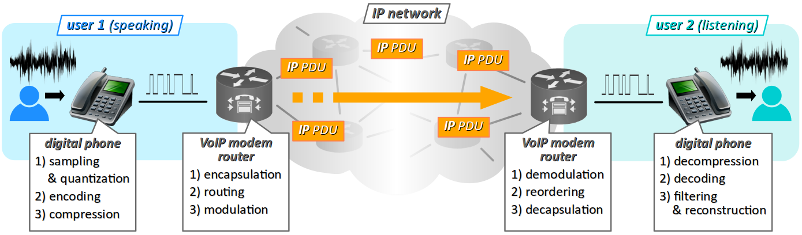

Dès le début des années 2000 sont apparus divers services de flux multimédia sur les réseaux informatiques : téléphonie et visiophonie, web radio et web télévision, etc. Ils ont été rendus possibles grâce aux nouvelles technologies de connexion à l'Internet, dites « haut débit » à l'époque – liaison ADSL, environ 512 kbit/s (cf. par exemple en photo ci‑contre la Neuf Box 2003 avec carte Wi‑Fi rapportée ). Auparavant, un modem « 56K », avec un débit 10 fois plus faible aurait occasionnés des temps de latence insupportables dans la transmissions des sons et a fortiori des images.
Pendant la décennie qui a suivi, les réseaux informatiques et téléphoniques ont continué à cohabiter physiquement, tant chez les clients (particuliers, entreprises, organismes, etc.) que chez les fournisseurs de services (réseaux d'accès et de transport). Mais avec l'accroissement des performances en débits et le déploiement des réseaux d'accès et de transport à fibre optique, on a aussi assisté au déclin inexorable des réseaux téléphoniques, dont les services ont été peu à peu intégrés dans les réseaux informatiques.
Très logiquement, cette intégration a connu un développement industriel important (Computer telephony integration ou CTI W) avec à la fois une motivation économique (gain de place, de câbles, de prises…), mais aussi technologique (moins de normes et de protocoles, opération et gestion dématérialisée, équipements interopérables – qu'ils soient fixes ou mobiles…).
De nos jours, on emploie communément le sigle VoIP W – qui signifie voice over IP – pour désigner les technologies informatiques permettant la transmission de la voix – et plus généralement des signaux audio et vidéo sur les réseaux à pile de protocoles TCP/IP.
Il ne s'agit pas seulement de protocoles, mais d'un ensemble de composant logiciels, dont certains sont spécifiquement dédiés aux applications téléphoniques – avec notamment ce qu'on appelle un softphone, c'est‑à‑dire une application qui émule un téléphone IP sur ordinateur.
Ces technologies logicielles peuvent également être associées à des équipements matériels : en particulier, on a l'autocommutateur IPBX qui vient se substituer au traditionnel central téléphonique qui équipait les grands locaux professionnels, ou encore le téléphone IP « physique », etc. – cf. la photo ci‑contre.
Il existe désormais une forte demande en services multimédia sur les réseaux informatiques :
- dans le monde professionnel, bien évidemment pour la téléphonie proprement dite mais aussi, avec l'essor du travail à distance, pour les visioconférences, ainsi que la vidéo‑surveillance ;
- chez les particuliers, notamment via les logiciels de messagerie instantanée (Facebook, Whatsapp, Viber, Instagram, Tik-Tok…), mais aussi dans le secteur de la domotique (commande vocale, vidéo‑surveillance).
Au regard de ces évolutions majeures, tout technicien en informatique doit avoir des bases en VoIP. Dans cet objectif de formation, mais au regard de la complexité de la thématique, le présent chapitre ne propose qu'un panorama superficiel, avec quelques approfondissements spécifiques :
- une première section est consacrée aux généralités relatives aux technologies VoIP, avec en particulier la présentation de la notion de codec ;
- une deuxième section est consacrée aux technologies matérielles et logicielles spécifiques à la téléphonie IP.
Généralités
Processus général de la VoIP – notion de session
Comme pour les signaux audio en général, la transmission des signaux vocaux sous forme d'un flux de données VoIP passe par plusieurs étapes spécifiques :
- en premier lieu, l'acquisition des ondes sonores par un microphone et la conversion analogique numérique (échantillonnage et quantification), avec à la clef d'éventuelles opérations de traitement (amplification, filtrage) pour obtenir un signal numérique satisfaisant ;
- l'encodage et la compression du signal numérique pour diminuer la bande passante nécessaire à la transmission du signal ;
- l'encapsulation du signal numérique compressé en paquets, générant une séquence de PDU routables sur un réseau IP ;
- l'éventuelle modulation‑démodulation nécessaire pour la transmission sur un réseau longue distance ;
- après réception, la remise en ordre des PDU, puis leur extraction pour reconstituer le signal numérique compressé ;
- la décompression et le décodage de ce signal pour reconstituer le signal numérique vocal ;
- la conversion numérique analogique du signal numérique et sa restitution sous forme d'ondes sonores par un haut‑parleur.
En VoIP, on appelle session l'ensemble des processus de communication mis en œuvre durant un appel entre deux utilisateurs (voire plus).

Pour procurer une qualité de service suffisante, il est nécessaire de cadencer l'émission‑réception des PDU à l'aide d'un protocole applicatif temps‑réel – donc, opérant au dessus des protocoles de transport TCP et UDP. En réponse à cette nécessité, on utilise principalement RTP W – pour real‑time transport protocol.
Il est également nécessaire de gérer les sessions d'appels (signalisation et clôture) par un autre protocole applicatif spécifique, typiquement SIP W – pour session initiation protocol.
Codage et décodage des signaux vocaux
Du fait des contraintes de la transmission en temps‑réel, ce sont principalement les opérations de compression et décompression qui imposent les limites de qualité du signal audio en téléphonie numérique. Ces opérations sont implémentées par des composants logiciels appelés codecs W – mot‑valise issu de l'anglais coder‑decoder.
Évolution des exigences de qualité pour les signaux vocaux
On rappelle que les ondes sonores audibles vont de 20 Hz à 20 kHz pour un enfant, mais seulement 12 kHz pour un adulte. Quant aux signaux sonores générés par la voix, ils présentent un spectre de fréquences encore plus réduit : leurs fréquences fondamentales s'échelonnent entre 60 Hz et 1500 Hz, avec des harmoniques dépassant très rarement 10 kHz.
Dans le cadre d'une conversation téléphonique transmise en technologie analogique « ancienne » (via le réseau RTC), il était d'usage de se contenter d'un spectre compris entre 200 Hz et 3,4 kHz, tout à fait suffisant pour restituer les paroles de façon intelligible, mais avec quand même une altération sensible du timbre. Cette limitation impactait toute la technologie associée (microphones et haut‑parleurs des combinés téléphonique, câbles de transmission, filtres…) : en effet, à quoi bon produire un téléphone Hi‑Fi si les signaux sont significativement altérés lors de la transmission.
En téléphonie mobile 3G et 4G, on opère maintenant les transmission d'appels vocaux sur un spectre allant jusqu'à 7 kHz. De plus, les téléphones portables sont pourvus de composants de bien meilleure qualité (notamment les écouteurs) que les téléphones fixes usuels. En particulier, les smartphones sont, comme les ordinateurs, toujours équipé de composants – carte son ou chipset audio – permettant de gérer une qualité de signaux pour l'écoute musicale, largement supérieure à celle que l'on attend lors d'un appel téléphonique.
Technologie des codecs en VoIP
La technologie VoIP emploie des codecs appropriés pour répondre à diverses exigences de qualité, notamment les normes de l'UIT‑T W. Parmi les codecs normalisés les plus utilisés historiquement en téléphonie, on peut citer :
- G.711 W qui opère sur un spectre de fréquences 300 Hz ‑ 3,4 kHz, soit une qualité médiocre, dite à bande étroite (narrow band) ;
- G.722 W qui opère sur un spectre de fréquences 50 Hz ‑ 7 kHz, soit une qualité dite « voix haute définition » ou à large bande (large band) ;
- G.729 W qui impose le même spectre de fréquences que le codec G.722, mais avec des algorithmes plus performants, donc moins consommateurs de bande passante sur les réseaux…
Le diagramme ci‑dessus permet de positionner ces codec comparativement à ceux employés en numérisation musicale stéréophonique (MP3, Vogg‑Orbis, etc.) qui opèrent au moins sur le spectre complet des fréquences audibles 20 Hz ‑ 20 kHz mais souffrent de délais de traitements rédhibitoires pour la téléphonie.
Parmi les formats de codecs récents (2012), ouvert et libre de droit, il faut citer Opus W, qui est normalisé par l'IETEF. Adaptatif, combinant plusieurs algorithmes, ce format permet d'obtenir des performance supérieures à celles de toutes les autres normes existantes.
Son implémentation libopus multiplateforme est opérationnelle sur tous les systèmes d'exploitation et employée par de nombreuses applications de communication (Discord, Whatsapp…)
La qualité des appels téléphoniques opérés en VoIP ne dépend pas que des codecs. Si les débits de ligne sont insuffisants, la qualité peut paraître largement inférieure à ce qu'elle était à l'époque des technologies analogiques opérées sur le RTC.
Services de téléphonie en VoIP
Par rapport à l'« ancien monde » analogique – et même avec des téléphones numériques opérant sur le RTC – la technologie VoIP apporte l'avantage décisif de coupler la téléphonie sur des machines puissantes (postes de travail, smartphones – cf. photo ci‑contre) connectées en réseau. Il en résulte :
- non seulement une meilleure intégration des services (appels audio et vidéo, historique des communications, annuaire, messagerie, transferts d'appels, conférences, etc.) ;
- mais aussi une simplification de l'administration de ces services, parce que les machines disposent d'interfaces homme‑machine puissantes (claviers et écrans polyvalents, voire tactiles) éventuellement dématérialisées (pages web avec compte associé, permettant de concentrer toutes les informations et synchroniser les différents appareils utilisés par une même personne).
Cette évolution n'est également rendue possible que par l'intégration des services de téléphonie dans la technologie des réseaux TCP/IP avec des protocoles libres de droits (pas de licence à payer pour les éditeurs de logiciels) et ouverts (ce qui facilite grandement les extensions indispensables pour la mise en œuvre de nouveaux services).
Auparavant, la technologie était en quelques sortes verrouillée par les équipementiers (constructeurs de téléphones et de centraux téléphoniques) qui imposaient leurs normes propriétaires en pratiquant des tarifs d'exploitation élevés aux fournisseurs de services (les opérateurs de téléphonie). Il fallait alors parfois plusieurs années pour voir apparaître à grande échelles de nouvelles fonctionnalités comme le double‑appel ou les redirections.
Désormais, on observe un rythme de développement beaucoup plus rapide.
Téléphonie usuelle
Dans un contexte professionnel, les services de téléphonie vocale restent indispensables pour la gestion courante (relation avec les clients, fournisseurs, collaborateurs externes…).
Ils peuvent être extrêmement sollicités si l'activité est précisément orientée dans le domaine de la communication téléphonique. C'est notamment le cas pour tout centre d'appel W (call center).
Les services usuels de téléphonie W sont principalement :
- la gestion générale des appels : signalisation, émission et réception en ligne directe ou via un standard, mise en attente, transfert, renvoi, etc.
- les conférences téléphoniques (conversations à plus de deux participants) ;
- le standard automatique à choix multiples par numérotation (le recours à un standardiste n'est alors requis que pour les cas marginaux) ;
- les annuaires décentralisés (chaque personnel gère son propre annuaire) ;
- la messagerie vocale…
Tous ces services existaient déjà avant la VoIP et sont bien évidemment repris dans cette technologie. Mais en plus, grâce l'informatisation des appels, on peut « facilement » employer toute la puissance de logiciels de supervision pour apporter un contrôle total de l'activité téléphonique des personnels d'une entreprise ou organisation. En particulier, on peut mettre en œuvre :
- l'écoute hiérarchique des appels et l'intervention par un tiers (conseiller, médiateur, etc.) ;
- le monitoring statistique, avec des rapports d'activité automatisés…
dans le cadre de ce qu'on appelle la gestion de la relation client W — en anglais, customer relationship Management ou CRM.
Visiophonie
Longtemps cantonnée au stade de « rêve futuriste » mis en scène dans de nombreux films de science‑fiction, même avec le déploiement de téléphones numériques, le développement de visiophonie est resté bloqué tant qu'il se heurtait à la faiblesse des débits sur les réseaux RTC.
En exploitant les réseaux informatiques, la technologie VoIP s'est affranchie de cet obstacle. Des solutions logicielles sont apparues très vite, notamment l'application Skype W dès 2003.
D'un point de vue informatique, la visiophonie repose sur les mêmes principes que la téléphonie : une fois la connexion établie entre les machines, on installe un flux de données compressé par des codecs et cadencé par un protocole applicatif temps‑réel. Les seules particularités sont :
- l'absence des phases de conversion analogique numérique et réciproquement, puisque les caméras comme les écrans sont « nativement » des dispositifs numériques ;
- les algorithmes de codage/décodage qui sont forcément très différents pour les flux vidéo et audio (H.264, VP9, AV1, etc.).
Pour plus de détails sur les codecs vidéo, on pourra visionner cette vidéo de la chaîne britannique Explaining Computers Y.
Néanmoins, la visiophonie reste encore aujourd'hui un service d'usage modéré pour de diverses raisons, notamment :
- la bande passante consommée ; le flux vidéo vient s'ajouter au flux audio (en règle générale, on ne fait pas de visiophonie muette) ;
- les contraintes de présentation qu'implique ce service sur ses usagers ; dans le cadre du télétravail, la téléphonie seule préserve la sphère intime du domicile, lequel échappe encore aux impératifs de présentation professionnelle (rangement, décoration, etc.).
Depuis le début des années 2010, les services de visiophonie sont largement disponibles à travers les applications personnelles de messagerie (Whatsapp, Viber…) ou de réseaux sociaux (Facebook…), exploitant le fait qu'un smartphone dispose déjà de tous les périphériques requis (écran, caméra frontale, microphone et haut‑parleur).
Parallèlement, les applications pour la sphère professionnelle ne sont pas en reste :
- après s'être longtemps cantonnées au développement de terminaux téléphoniques matériels, les grands industriels (Alcatel-Lucent, Ericsson, Cisco…) du secteur des télécommunication ont ajouté à leurs gammes des softphones W, c'est‑à‑dire des logiciels émulant la fonction téléphone/visiophone sur ordinateur ou même sur smartphone ;
- beaucoup plus récemment, la pandémie de Covid‑19 a provoqué une forte croissance du télétravail et de la demande en logiciels de visioconférence , parmi lesquels on peut citer Zoom, Google Hangout, Skype premium, Cisco WebEx, etc.
Messagerie unifiée et communications unifiées
Parmi les services supplémentaires de téléphonie rendus possibles par la technologie VoIP figure aussi ce qu'on appelle la messagerie unifiée W (unified messaging).
Dans les services de messagerie unifiée, on trouve :
- l'intégration de données diverses sous formes de pièces jointes de courriels – fax numérisés au format
pdf, messages vocaux ou vidéos numérisés au formatmp3oump4; - la gestion communes des téléphones fixes ou mobiles, notamment pour la redirection des appels ;
- l'intégration de l'application de messagerie instantanée comme un service parmi d'autres au même titre que l'application de téléphonie ; cette fonctionnalité est déjà prise en charge depuis longtemps par les logiciels clients lourds de messagerie (Thunderbird, Outlook…), mais encore rarement utilisée ;
- la synchronisation de l'annuaire de contact avec toutes les applications de communication utilisées ; en effet, depuis longtemps, les annuaires de messagerie électronique permettent d'intégrer des champs de numéros de téléphones dans les fiches de contact, et réciproquement, les annuaires téléphoniques ont des champs d'adresse de courriel ; mais il est contre‑productifs que ces différents annuaires fassent double emploi ; les unifier ou les synchroniser est pertinent ;
- la gestion du statut permettant de signaler la disponibilité ou non d'une personne pour un appel téléphonique…
Cette intégration des services apporte des gains en ergonomie, puisqu'on dispose alors dans une seule application de tous les outils de communication individuelle ou collective.
Plus encore, la tendance est à une intégration encore générale des services appelée communications unifiées W. À la messagerie unifiée s'ajoutent le partages de documents voire même d'applications.
Une telle intégration prend tout son sens au sein de groupes de personnes liées par un travail collaboratif : équipe d'ingénieurs affectées un projet, équipes médicales partageant des dossiers de patients, etc.
Architecture matérielle et logicielle pour la VoIP
Rappels sur les technologies du RTC
On a vu au chapitre R1‑I qu'avant la rationalisation par le « tout IP » des réseaux de télécommunication, la téléphonie était portée par un réseau spécifique dit RTC ou réseau téléphonique commuté – en anglais, public switched telephone network ou PSTN.
Pour qu'un grand nombre de personnels d'un organisme professionnel (entreprise, institution, etc.) puisse bénéficier des services téléphoniques sans souscrire à autant de lignes téléphoniques (ce qui aurait coûté beaucoup trop cher voire aurait été infaisable matériellement), il fallait installer un appareil appelé commutateur central W – ou central téléphonique – techniquement désigné d'abord PABX (pour private automated branch exchange), puis simplement PBX (tous les commutateurs étant automatisés).
Cet équipement assurait notamment :
- le multiplexage entre les lignes internes et externes de l'organisme, avec à la clef les services usuels de standard téléphonique (d'où ce terme parfois employé pour désigner l'appareil) ;
- le centre névralgique du réseau interne, permettant notamment les appels internes – c'est‑à‑dire entre les postes téléphoniques de l'organisme – sans passer par l'extérieur ;
- la gestion des droits des différents postes pour attribuer ou non l'accès au réseau téléphonique national, voire international ;
- le calcul des temps et des coûts des communications téléphoniques par poste raccordé…
La mise en œuvre de cette technologie était malcommode, avant tout parce que les services étaient attachés aux lignes téléphoniques et non pas aux équipements (les téléphones eux‑même). Ainsi, tout changement de bureau d'un personnel nécessitait une modification du paramétrage du PBX.
De plus, avec le développement des services numériques – en France, les lignes dites RNIS W (en anglais ISDN, pour integrated services digital network) appelées commercialement Numéris par l'opérateur national historique devenu Orange W – toute modification du PBX devenait de plus en plus complexe et nécessitait le plus souvent l'intervention d'un technicien spécialisé.
Fin annoncée du RTC
En France, l'abandon du RTC est engagé depuis plus d'une dizaine d'année. Il est complètement achevé sur les réseaux de transport, ce qui fait qu'aujourd'hui, toute communication téléphonique passe au moins partiellement en technologie VoIP.
Avec le respect du délais de préavis de 5 ans imposés par l'Arcep (cf. le sujet de TP R1‑1 ), la fin d'exploitation du réseau d'accès en technologie commutée (mais pas le support physique cuivre lui‑même, qui reste exploité en XDSL) a commencé en 2021 et devrait s'échelonner sur l'ensemble du territoire durant une dizaine d'années encore .
Pour les particuliers, une alternative consiste à souscrire un abonnement multi‑service classique téléphone-télévision-Internet avec une box en liaison ADSL ou fibre totalement dégroupée. On peut également opter pour une solution en technologie mobile, sauf si le lieu est encore une zone blanche.
Pour les professionnels, notamment ceux utilisant encore des lignes RNIS, il est impératif de re‑concevoir le système de téléphonie en migrant vers la technologie VoIP. Essentiellement, deux solutions sont envisageables :
- soit le remplacement du PABX par un central IPBX (c'est‑à‑dire un standard téléphonique en VoIP) et l'emploi de la technologie trunk SIP ;
- soit l'abandon du central interne et son externalisation – dit Centrex – assurée par un opérateur téléphonique.
VoIP via un central IPBX
Un central téléphonique IPBX W (Internet protocol private branch exchange) est un équipement de réseau informatique qui assure en technologie VoIP la gestion des liaisons téléphoniques dans un réseau local et vers un réseau IP externe (typiquement, l'Internet) et/ou le RTC.
Un IPBX seul n'assure jamais la liaison directe entre le réseau local et un réseau externe : il est intégré comme un serveur doit être placé sous la protection d'une passerelle et de dispositifs de sécurité (pare‑feu, proxy), comme illustré par exemple sur la figure topologique ci‑contre.
Même si cela devient de plus en plus rare, pour relier un IPBX à un RTC (PSTN en anglais), il faut recourir à une passerelle spécifique qui convertit en signaux analogiques les PDU de VoIP pour le flux sortant vers le RTC – et inversement pour le flux entrant.
Notion de trunk SIP
L'avantage principal de recourir à un IPBX interne, c'est qu'elle laisse l'organisme libre de souscrire à divers abonnements auprès des opérateurs téléphoniques.
Une souscription d'abonnement consiste alors à mettre en place un trunk SIP W au réseau d'accès de l'opérateur, c'est‑à‑dire un tunnel virtuel qui sépare les PDU téléphoniques des autres PDU, en conformité avec le protocole de signalisation employé, typiquement le protocole SIP – cf. infra .
L'inconvénient principal de cette solution, c'est qu'en plus du paramétrage du standard téléphonique, l'administration de l'IPBX (machine et logiciel) est entièrement à prendre en charge par l'organisme, avec les responsabilités que cela implique en termes de continuité de service et de sécurité.
Technologie matérielle
La technologie matérielle pour mettre en œuvre un IPBX dépend, comme pour tous les services, de la taille de l'installation, qui est essentiellement caractérisée par le nombre de postes téléphoniques (physiques ou logiciels) qui sont utilisés simultanément sur le réseau.
- Pour les petites installations (moins d'une dizaine de postes), un simple ordinateur – voire un nano‑ordinateur – suffit, à partir du moment où ses caractéristiques lui permettent d'exécuter avec des performances satisfaisantes une application dédiée de téléphonie en VoIP (par exemple, Asterisk).
Technologie logicielle
Sur une machine IPBX, les services de standard téléphonique sont assurés par une application principale – qu'on appelle souvent IPBX par métonymie – et divers composants logiciels associés.
En particulier, l'application doit jouer le serveur pour les principaux protocoles de VoIP, notamment RTP et SIP – cf. infra .
Les applications IPBX se distinguent les unes des autres essentiellement par le nombre et la diversité des services qu'elles peuvent mettre en œuvre. Parmi les plus connues, on peut citer :
- Asterisk W, qui est multiplateforme et qui offre une licence libre de droit pour un nombre appréciable de services ;
- 3CX Phone System, pour systèmes d'exploitation Windows et Linux, dont la licence est payante (donc plutôt réservée au monde professionnel).
Pour découvrir d'autres applications IPBX, on pourra consulter la liste donnée par Wikipedia W.
Questions de sécurité
En termes de sécurité et de confidentialité, un IPBX est une machine sensible. Sans protections adéquates, en plus des attaques classiques sur les systèmes informatiques, elle peut être victime de l'installation :
- d'un logiciel espion pour écouter les conversations stratégiques ;
- d'un générateur d'appel vers des numéros surtaxés qui peuvent rapidement occasionner des pertes financières importantes.
VoIP par Centrex IP
On appelle Centrex W un central téléphonique VoIP externalisé chez un opérateur de téléphonie – on peut aussi parler d'IPBX cloud.
Moyennant la souscription d'un contrat :
- c'est alors l'opérateur qui prend en charge l'investissement matériel et l'administration de l'IPBX ; il en assume la sécurité ;
- l'organisme souscripteur peut néanmoins avoir directement la main sur une partie du paramétrage du standard téléphonique par l'intermédiaire de pages web.
Avec la solution Centrex (cf. la topologie de principe en figure ci‑dessus), le flux de données téléphonique est identifié chez l'opérateur via les protocoles de signalisation (SIP, etc.) et des adresses IP des postes téléphoniques de l'organisme souscripteur. Ces derniers bénéficient donc d'un mobilité totale dès lors qu'ils passent par une application de téléphonie VoIP correctement paramétrée. Les personnels peuvent ainsi utiliser leur(s) téléphone(s) partout (moyennant un accès réseau) exactement comme s'ils étaient sur leur lieu de travail.
En contreparties, l'organisme souscripteur perd la garantie absolue de la confidentialité de ses flux téléphoniques. De plus, la solution Centrex peut s'avérer moins diverses et moins souple en termes de services. Enfin, les appels internes passant nécessairement par l'extérieur, ils occasionnent une charge supplémentaire sur la bande passante au réseau d'accès à l'Internet dont bénéficie l'organisme.
Dimensionnement de la liaison au réseau d'accès
Quelle que soit la solution adoptée, la téléphonie VoIP doit impérativement être prise en compte pour le dimensionnement de la liaison au réseau d'accès à l'Internet, en termes de débits descendants et montants.
Ce dimensionnement dépend essentiellement du nombre d'appels simultanés à prendre en charge et de la qualité sonore et visuelle exigée – donc du choix des codecs utilisés (cf. supra ).
Notons que le nombre d'appels simultanés à prendre en compte n'est pas le même selon que l'on opère avec un IPBX interne ou avec un Centrex. Dans ce dernier cas, les appels internes doivent aussi être comptés, comme cela a déjà été souligné.
Quant au choix des codecs, il est certes bouleversé par l'apparition de nouvelles technologies comme Opus (cf. supra ) qui, à qualité égale, diminuent grandement la consommation de bande passante par rapport à celle de ses concurrents. Néanmoins, le choix de la qualité reste un paramètre essentiel.
On retiendra les ordres de grandeur suivants de consommation moyenne par appel :
- 30 kb/s en audio basse qualité ;
- 80 kb/s en audio haute qualité.
Choix du type de ligne d'accès
En règle générale, avec la téléphonie en VoIP, une ligne d'accès à l'Internet peut être choisie entre deux alternatives :
- en technologie cuivre SDSL W – avec un « S » initial pour symétrique car les débits montants et descendants ne sont a priori pas différents ;
- en technologie à fibre optique, typiquement FTTO W (fiber to the office) pour les entreprises.
Dans tous les cas, un sous‑dimensionnement occasionne non seulement un congestion générale des flux de données, mais aussi deux défauts qui impactent directement la qualité de service en téléphonie : la latence et la gigue.
Notions de latence et de gigue
Dans le domaine de la transmission de données sur les réseaux informatiques :
La latence est inévitable mais elle doit rester modérée. Tant qu'elle est inférieure à 150 ms, elle est quasiment imperceptible. Tolérer une légère latence octroie une meilleure fluidité au débit de parole, qui est une condition essentielle pour une bonne interactivité entre locuteurs.
Mais au dessus de cette valeur, la situation se complique. En effet, au cours d'une conversation, le débit de parole varie et subit des temps d'hésitation variables. Une latence trop importante – typiquement, supérieure à 500 ms – va nécessairement générer des silences du locuteur, qui risquent fort d'être interprétés comme volontaires, et donc pousser l'autre locuteur à prendre la parole alors qu'il sera inévitablement interrompu par l'arrivée des signaux en retard.
La gigue pose plus de problème, parce qu'elle est imprévisible et peut occasionner ponctuellement des retards très importants. Pénibles en soi, ces derniers ont aussi la conséquence fâcheuse de perturber le bon fonctionnement des protocoles de communication. La gigue crée donc un cercle vicieux. Plus elle est élevée, plus la congestion du réseau s'accentue, ce qui a tendance à l'amplifier.
Les protocoles de signalisation
En téléphonie, visiophonie et plus généralement dans le cadre d'une messagerie unifiée, la signalisation est l'ensemble des techniques qui permettent le contrôle des communications, c'est‑à‑dire typiquement l'initialisation et la clôture d'une session.
À la requête d'un client appelant, le protocole de signalisation assure notamment :
- la recherche du ou des appelés ;
- la signalisation de l'appel à l'appelé (typiquement, ce qui déclenche la sonnerie) ainsi que de la fin d'appel (le fait qu'un client ait raccroché).
Depuis les années 1980, le protocole SS7 W (signaling system #7) s'était imposé sur les RTC et les réseaux de téléphonie mobile avec notamment, pour l'identification des touches de numéros saisies par l'appelant l'abandon des doubles fréquences sonores – plus précisément, la technologie DTMF W (cf. la figure ci‑contre) – qui étaient facilement piratables W.
Mais depuis 2014, cette technologie est considérée quand même comme faillible en termes de sécurité (des possibilité de géolocalisation des téléphones et d'interception des communications ont été mises en évidence).
Quant à la technologie VoIP, elle recourait au début à la famille de protocoles H.323 W, eux‑même dérivé des protocoles H.320 utilisés sur les RNIS.
Aujourd'hui, tous ces protocoles sont abandonnés au profit du protocole SIP.
Le protocole SIP – généralités
Le protocole SIP W (session initiation protocol) est un protocole applicatif (couche n° 7 du modèle OSI) de signalisation de sessions en VoIP et la gestion de statut des utilisateurs. Ouvert et libre de droits, il est aujourd'hui universellement employé en téléphonie mobile et fixe, et plus généralement dans les applications de communication grand‑public (Whatsapp, Skype, etc.).
Développé à la fin des années 1990, le protocole SIP est maintenant basé sur la RFC 3261 publiée en 2002. Parce qu'il opère sur des données peu volumineuses, il recourt au protocole de transport UDP (cf. chap. R1-IV ). Il s'appuie sur le protocole applicatif SDP W pour la coordination du codec utilisé par les agents interlocuteurs.
Le protocole SIP utilise par défaut le port nº 5060 et, dans sa version sécurisée par TLS, le port nº 5061.
Toutefois, comme il ne s'agit pas de well‑known ports (cf. chap. R3‑I ), il est possible de recourir à d'autres numéros ports, à condition de changer ce qu'on appelle les profiles SIP des agents utilisateurs (typiquement, les agents utilisateurs).
À l'instar des protocoles de messagerie électronique (SMTP, IMAP), le protocole SIP utilise des identifiants littéraux pour identifier les agents utilisateurs et leurs spécificités. Similaire aux URL de schéma mailto, un identifiant SIP est un URI (uniform resource identifier W) dont la forme simple est la suivante :
sip:utilisateur@hôte
où :
- l'utilisateur peut être :
- un nom composé avec le point séparateur
.typiquement de la formeprénom.nom; - ou encore un numéro de téléphone, typiquement formaté selon le standard E.164 W ;
- l'hôte doit être un nom de domaine ayant préalablement fait l'objet d'un enregistrement DNS de type SVR W.
Le mode opératoire du protocole SIP est très similaire à celui des protocoles de messagerie électronique (SMTP, IMAP). Il procède par échanges de lignes de caractères (chacune terminée par un saut de ligne \r \n) et :
- les requêtes formulées sous forme de commandes ;
- les réponses sont formulées sous la forme de codes numériques de statut W.
Le protocole SIP peut être analysé selon un modèle client‑serveur.
Pour plus de détails sur le déroulement du protocole SIP, on pourra visionner la série de vidéo proposée par cette chaîne spécialisée Y.
Postes téléphoniques en VoIP
Un poste téléphonique VoIP est avant tout un client terminal (end‑point client) pour les protocoles de VoIP, tout particulièrement SIP.
Concrètement, un terminal VoIP peut se décliner aussi bien comme un téléphone « fixe », également dit hardphone (avec éventuellement un combiné sans‑fil), comme un téléphone mobile (via une application) ou encore comme ce qu'on appelle un softphone (une application de téléphonie sur ordinateur).
Téléphones « fixes »
alimentation PoE (power over Ethernet) W
Téléphones mobiles
Il faut installer une applications spécifique VoIP et la paramétrer en accord avec la configuration de la technologie adoptée (IPBX interne ou Centrex).
Softphones
De même, il faut installer une applications spécifique VoIP et la paramétrer en accord avec la configuration de la technologie adoptée (IPBX interne ou Centrex).
Applications spécifiques VoIP + kit micro hauts-parleurs